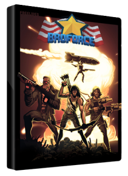

Broforce este un joc video de platformă cu rulare în mişcare, dezvoltat de Free Lives şi publicat de Devolver Digital . Dezvoltarea a început în aprilie 2012 ca o intrare în joc cu jam şi a continuat cu dezvoltatorii şi sprijinul popular, existent ca joc de acces timpuriu . Jocul a fost lansat pe 15 octombrie 2015 pentru Microsoft Windows şi OS X , iar portul Linux a urmat două zile mai târziu. O versiune PlayStation 4 a fost lansată la 1 martie 2016.Broforce include iniţial mai multe personaje, iar jucatorul câştiga mai mult pe masură ce salveaza un anumit numar de prizonieri de razboi.
Preţ : 36,06 €